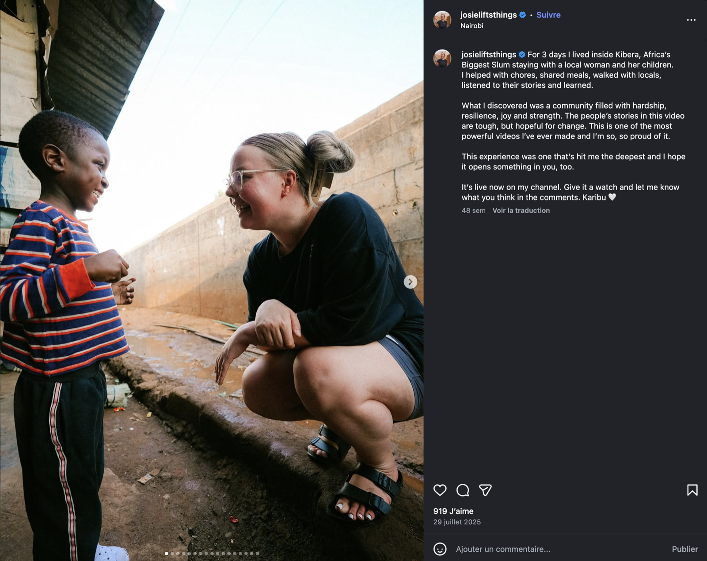
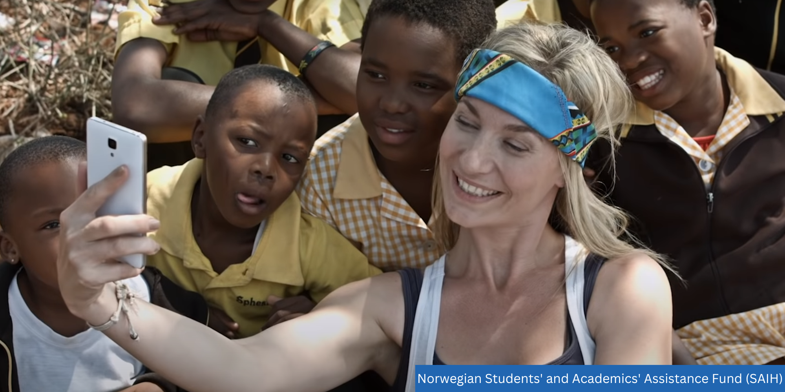
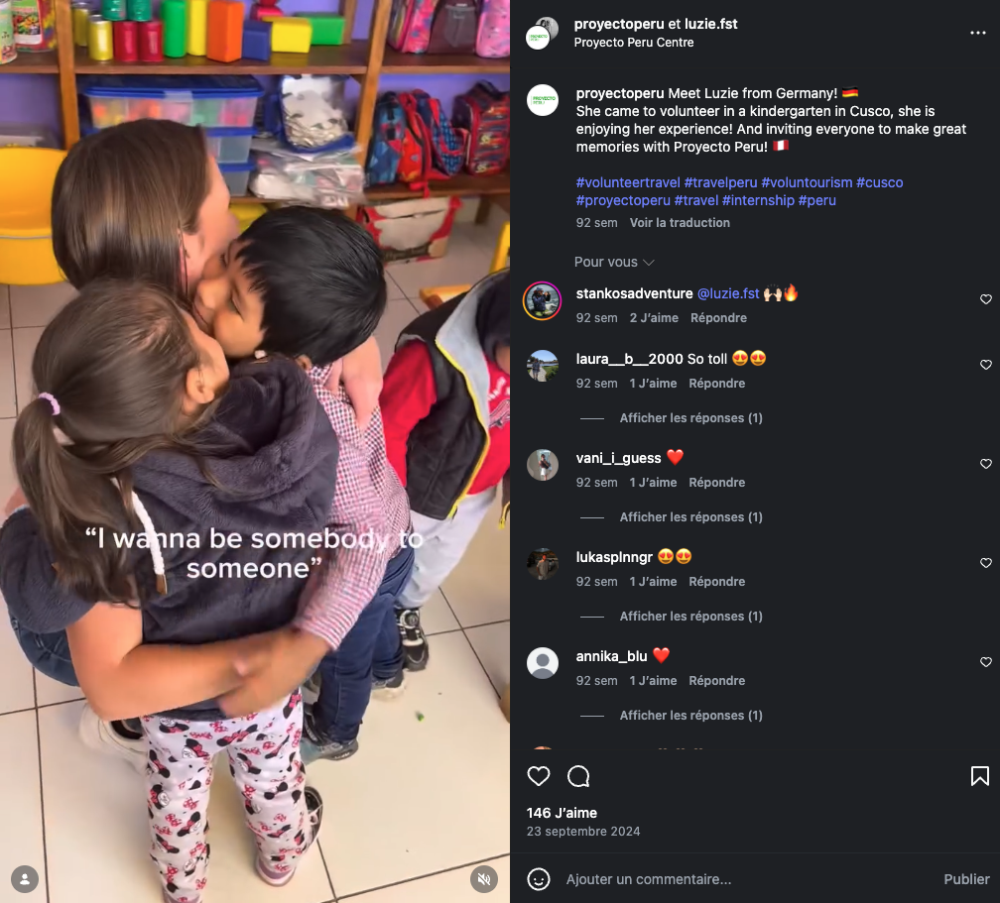
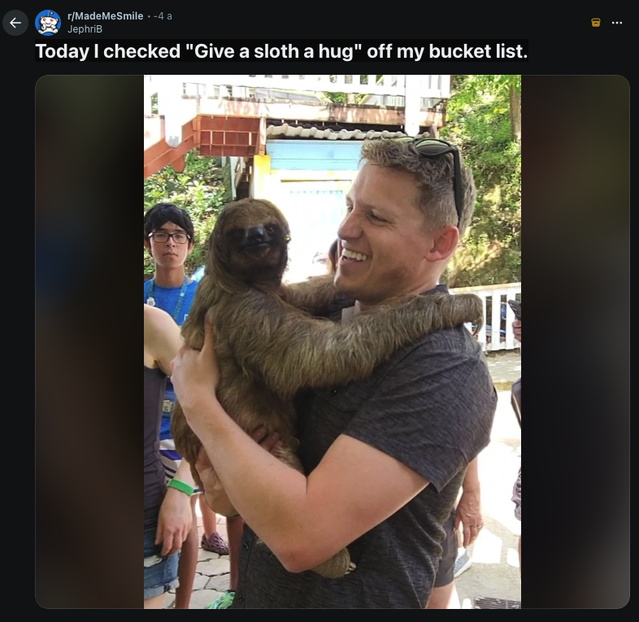
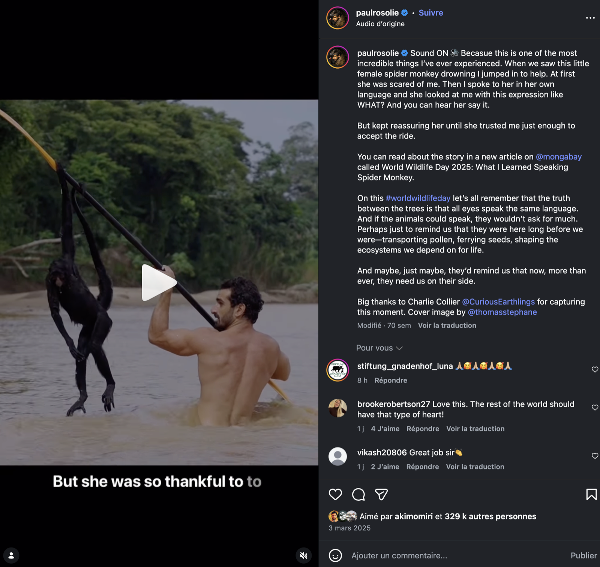
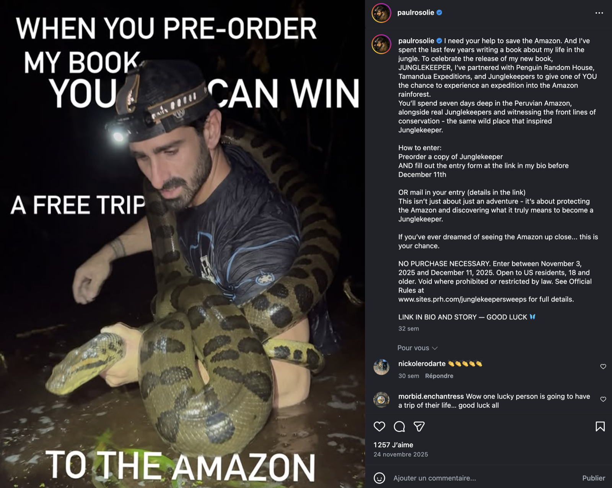
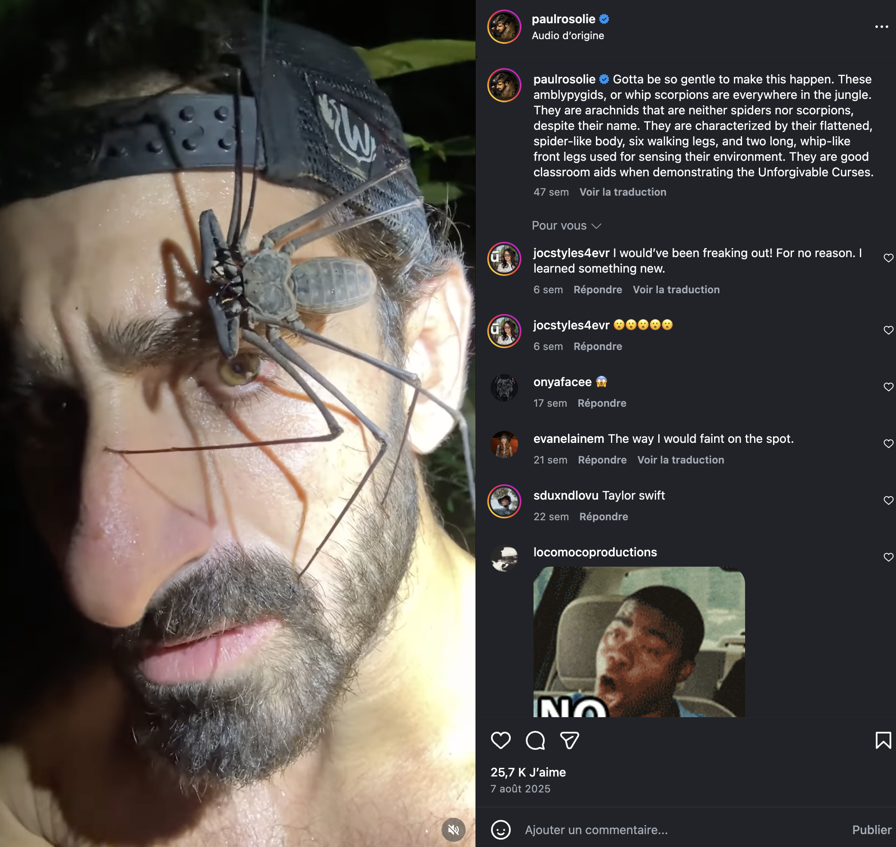

Sommaire
« Pourquoi je veux partir ? Qu'est-ce que j'espère apporter ? »
Note formateur : Tour de table. Noter les réponses : on y revient en clôture (slide 37).
PARTIE 1 / 4
Du colonialisme au néocolonialisme
Conférence de Berlin, partage colonial de l'Afrique
Décolonisations, indépendances politiques
Néocolonialisme économique et culturel
PARTIE 1 / 4
Définir le néocolonialisme
« L'essence du néocolonialisme, c'est que l'État qui y est soumis est, en théorie, indépendant. En pratique, son système économique, et donc sa politique, est dirigé de l'extérieur. »
Kwame Nkrumah, 1965
FMI et Banque mondiale : conditionnalités structurelles
Dette comme instrument de contrôle politique
PARTIE 1 / 4
Trois voix fondatrices
Les Damnés de la Terre, 1961
« La décolonisation est toujours un phénomène violent. »
Local Histories / Global Designs, 2000
« La modernité est indissociable de la colonialité. »
Critique de la raison nègre, 2013
« Le monde noir n'existe que dans le regard qui le fabrique. »
PARTIE 1 / 4
L'aide internationale en chiffres
milliards $ d'APD en 2023
États-Unis · Allemagne · Japon · Royaume-Uni · France
Afrique subsaharienne · Asie du Sud · Amérique latine
Source : OCDE/CAD, 2023
PARTIE 1 / 4
Trois approches, trois logiques
Communautés locales décident
Partenaires égaux
→ Autonomisation
Bailleurs et États décident
Bénéficiaires ciblés
→ Risque de dépendance
ONG internationales décident
Victimes de crise
→ Survie immédiate
Note formateur : Demander aux participants : où se situe AKUU ?
PARTIE 1 / 4
Vidéo · 10 min
« DÉCODEUR MINUTE : Le décolonialisme »
« Dans cette définition, où situez-vous le travail d'AKUU ? »
Note formateur : Lancer la vidéo en plein écran, puis revenir pour la question. 5 min de discussion.

L'aide internationale
Quand les bonnes intentions ne suffisent pas
PARTIE 2 / 4
Afrique subsaharienne · 1970–1998
pauvreté en 1970
pauvreté en 1998
…malgré des décennies d'aide massive.
Dambisa Moyo, Dead Aid, 2009
PARTIE 2 / 4
L'Aide fatale
Dambisa Moyo, 2009
Économiste zambienne, ancienne Banque mondiale. L'aide systématique crée une dépendance structurelle.
AccessibleNote formateur : Thèse contestée. Présenter comme déclencheur de débat, pas comme vérité établie.
PARTIE 2 / 4
Cas d'étude 1
Les vêtements donnés
vêtements usagés arrivent au Ghana chaque semaine
seulement sont réellement utilisables
Destruction documentée de l'industrie textile locale au Kenya, Ghana et Zambie.
Source : RTS, 2025
PARTIE 2 / 4
Vidéo · 8 min
Fast fashion : nos vieux habits polluent les plages du Ghana
Note formateur : Après la vidéo, relier au cas des vêtements de la slide précédente.
PARTIE 2 / 4
Cas d'étude 2
Les moustiquaires gratuites
Note formateur : Ce schéma s'applique à de nombreux dons matériels. Demander d'autres exemples.
PARTIE 2 / 4
Cas d'étude 3
Les orphelinats « à bénévoles »
des enfants dans les orphelinats ont au moins un parent vivant
Rapport UNICEF, 2017
PARTIE 2 / 4
Cas d'étude 4
Haïti post-séisme 2010
d'aide internationale
ONG présentes
résultat 10 ans après
Source : rapport CEPR, 2020
PARTIE 2 / 4
Vidéo · 18 min
The Danger of a Single Story
Note formateur : TED Talk de Chimamanda Ngozi Adichie. Après la vidéo : quelles 'histoires uniques' portez-vous sur le Pérou ?
PARTIE 2 / 4
Séverine Autesserre
The Trouble with the Congo
2010 · Comment les interventions internationales échouent par méconnaissance du terrain local.
AvancéPeaceland
2014 · Ethnographie des « expatriés de la paix » et de leur bulle déconnectée.
Intermédiaire
PARTIE 2 / 4
Poor Economics
Abhijit Banerjee & Esther Duflo, 2011
Approche par les données et les expériences randomisées. Comment comprendre les décisions économiques des plus pauvres sans les réduire à des stéréotypes.
L'aide internationale : nécessaire ou contre-productive ?
« L'aide internationale est nécessaire et fonctionne »
« L'aide internationale est structurellement contre-productive »
Appuyez-vous sur les données, auteurs et cas vus dans cette partie.
Note formateur : 5 min préparation, 5 min argumentation chacune, 5 min synthèse. Objectif : nuancer.
Le sauveur blanc
D'où vient cette figure et pourquoi elle persiste
PARTIE 3 / 4
Une même grammaire visuelle
Mission civilisatrice (Jules Ferry)
Images des missionnaires
Band Aid (Bob Geldof)
Selfies humanitaires
PARTIE 3 / 4
Le White Savior Complex
« The White Savior Industrial Complex is not about justice. It is about having a big emotional experience that validates privilege. »
Teju Cole, The Atlantic, 2012
Mécanisme psychologique : transformer une souffrance collective en récit de croissance personnelle.
PARTIE 3 / 4
Le paradoxe des images
de dons à court terme quand les images montrent la souffrance
de perception d'autonomie des populations représentées
Kathryn Moody, 2017 · impact des images « poverty porn » sur les donateurs
PARTIE 3 / 4
Vidéo · 8 min
Détournements de fonds, fausses bonnes actions : le white saviorism
Note formateur : Après la vidéo, demander : « Avez-vous déjà vu ce type de comportement ? »
PARTIE 3 / 4
The Danger of a Single Story
Chimamanda Ngozi Adichie, TED Talk, 2009
« Le problème avec les stéréotypes, ce n'est pas qu'ils soient faux, c'est qu'ils soient incomplets. Ils font d'une seule histoire la seule histoire. »
PARTIE 3 / 4
Le « Poverty Porn »
Représentation déshumanisante de la pauvreté utilisée pour susciter empathie ou dons.
Jørgen Lissner, 1977
En 2025, des images de pauvreté sont désormais générées par IA pour maximiser l'engagement sur les réseaux sociaux.
PARTIE 3 / 4
Avant de photographier sur le terrain
Ai-je demandé un consentement éclairé ?
Cette image représente-t-elle la dignité de la personne ?
Publierais-je cette photo si c'était mon enfant ?
Qui bénéficie de cette image : moi ou la communauté ?
Tri de photos
Le formateur projette 8 images de communication humanitaire. Les participants classent chaque image sur un axe :
Note formateur : Préparer 8 images à l'avance (campagnes ONG, posts Instagram, publicités). Débat après chaque image.
Les images utilisées dans cette activité ont été prélevées sur des comptes Instagram publics, sans demander l'avis aux personnes concernées.
Elles sont utilisées dans un cadre strictement pédagogique. Si une personne concernée supprime publiquement son image, nous en ferons de même.

La bénévole est physiquement au-dessus de l'enfant (sur une marche). Mise en image littérale du rapport de pouvoir
Récit centré sur elle : « I lived », « I discovered », « I'm so proud », « hit ME the deepest »
3 jours pour « découvrir » ce que les gens vivent toute leur vie
« Africa's Biggest Slum ». Kibera réduit à un label de misère
« Hardship, resilience, joy ». Formule classique du « poor but happy » qui romantise la pauvreté
La vie des habitants sert de contenu YouTube monétisable
Note formateur : Montrer d'abord l'image seule (slide précédente ou main sur l'écran). Laisser voter. Puis révéler l'analyse.

Elle tient le téléphone. Elle contrôle l'image, le cadrage, le récit. Les enfants n'ont aucun pouvoir sur leur représentation
Les enfants sont des accessoires dans SA photo. Pas nommés, pas consultés
Aucun consentement éclairé. Ces enfants ne savent pas où la photo sera publiée ni combien de personnes la verront
Cadrage en plongée. Renforce visuellement la hiérarchie entre la bénévole et les enfants
La vulnérabilité des enfants est convertie en capital social (likes, followers)
Test : publieriez-vous cette photo si c'était votre enfant, pris en selfie par une inconnue ?
Source image : SAIH (Norwegian Students' and Academics' Assistance Fund). Campagne Radi-Aid contre les stéréotypes dans l'aide humanitaire.

« I wanna be somebody to someone ». La motivation est centrée sur le besoin de la bénévole d'être importante, pas sur les enfants
L'ONG utilise la bénévole comme produit marketing : « She is enjoying her experience! ». C'est une pub pour attirer d'autres volontaires payants
Les hashtags #voluntourism #volunteertravel confirment que c'est assumé comme du tourisme
La bénévole est-elle qualifiée pour travailler dans un jardin d'enfants ? Aucune mention de compétences
C'est l'ONG elle-même qui produit ce contenu. Le problème est systémique, pas individuel
Source : compte Instagram public @proyectoperu, septembre 2024.

« Bucket list ». L'animal est réduit à une expérience à cocher, exactement comme les communautés dans le volontourisme
Le paresseux est un animal sauvage stressé par le contact humain. Ce type d'interaction peut provoquer sa mort
Même logique que le volontourisme : consommer une expérience exotique pour soi, sans considération pour l'autre
r/MadeMeSmile : la souffrance animale présentée comme du contenu feel-good. Même mécanisme que le poverty porn
Source : post Reddit r/MadeMeSmile. Le parallèle avec le volontourisme illustre la logique commune de consommation d'expériences.



Eaten Alive (Discovery, 2014) : il a tenté de se faire avaler par un anaconda en direct. Condamné par PETA. Le stunt a échoué
Sensationnalisme systématique : singe « sauvé » depuis un bateau avec équipe de tournage, anaconda autour du cou, araignée sur le visage. Toujours torse nu, muscles en avant
Marketing déguisé en conservation : concours « gagnez un voyage en Amazonie » à condition d'acheter son livre
White saviorism écologique : toujours « l'Américain sauve la jungle ». Les acteurs locaux sont invisibilisés
Leçon clé : il faut toujours prendre en compte le contexte et l'historique d'une personne pour évaluer une image. Une photo isolée peut sembler positive. Le pattern révèle la réalité
PARTIE 3 / 4
Médecin malgré moi
Rony Brauman, 2018
Ancien président de MSF. Regard critique de l'intérieur sur les contradictions de l'action humanitaire et les limites de la posture du « sauveur ».
Le volontourisme
Anatomie d'une industrie
PARTIE 4 / 4
Le volontourisme en chiffres
chiffre d'affaires annuel
volontaires internationaux / an
croissance annuelle avant Covid
Source : Tourism Research and Marketing, 2008
PARTIE 4 / 4
Qui gagne, qui perd, qui décide ?
Agences prélèvent 60–80% des frais
Aucune compétence requise
Communautés = décor
Projet défini par la communauté
Durée longue, formation préalable
Transparence financière
Note formateur : Demander : dans quelle colonne se situe la démarche d'AKUU ? Quels garde-fous avons-nous ?
PARTIE 4 / 4
Vidéo · 10 min
Le white saviorism et le volontourisme expliqués
Note formateur : Discussion après visionnage : quels mécanismes reconnaissez-vous ?
PARTIE 4 / 4
Volunteer Tourism: Neo-colonialism or Postcolonial Development?
Mary Mostafanezhad, GeoJournal, 2014
Analyse académique des dynamiques de pouvoir dans le volontourisme. Accès gratuit sur ResearchGate.
Avancé
PARTIE 4 / 4
Against White Feminism
Rafia Zakaria, 2021
Chapitre sur le volontariat féminin international · comment la « bonne volonté » reproduit des hiérarchies raciales et de genre.
Intermédiaire
5 min
Clôture du module
« Qu'est-ce qui a changé dans votre réponse initiale ? »
Note formateur : Reprendre les réponses du brise-glace (slide 2). Comparer avec les nouvelles réponses. Tour de table final.